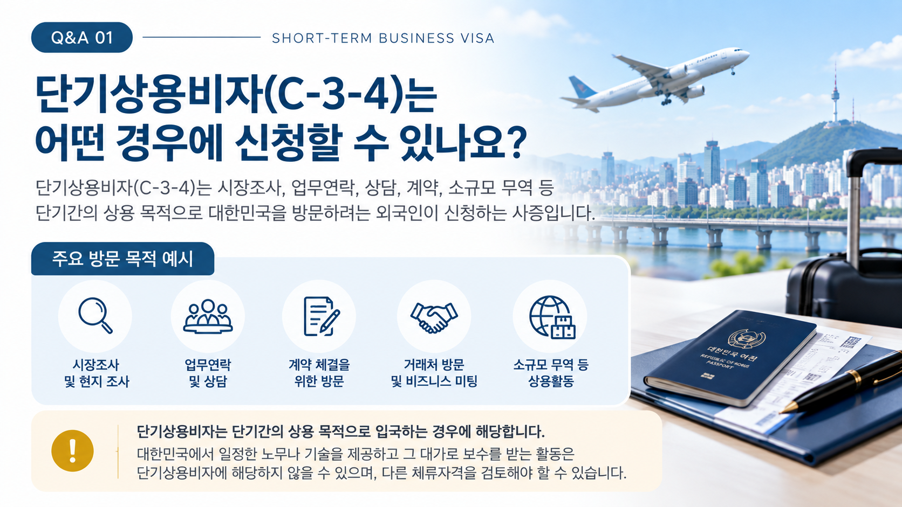
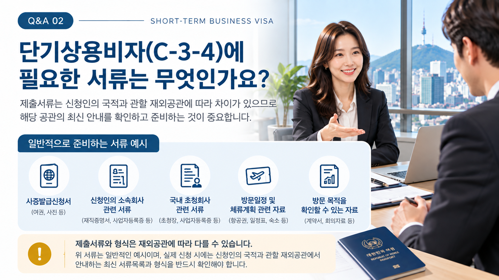
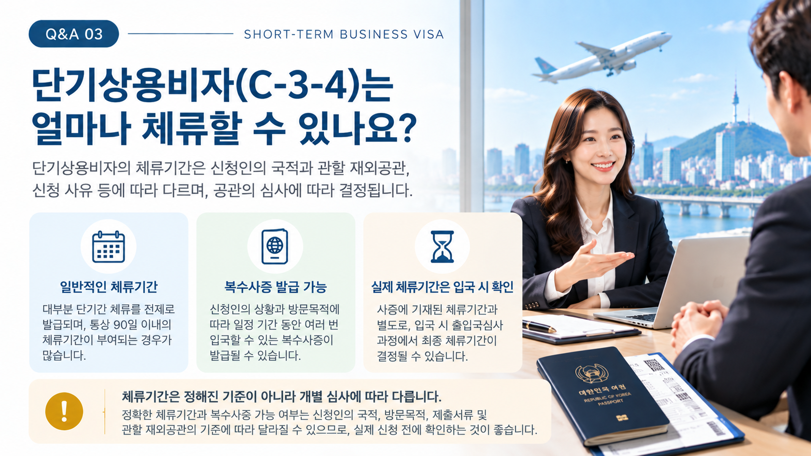

01. 단기상용비자(C-3-4)란?
단기상용비자(C-3-4)는 시장조사, 업무연락, 상담·계약 등 단기간의 상용 목적으로 대한민국을 방문하려는 경우 검토하는 체류자격입니다.
중요한 것은 신청서에 기재하는 명칭보다 대한민국에서 실제로 예정하고 있는 활동의 내용입니다.
02. 어떤 활동을 위해 방문하나요?
| 구분 | 주요 활동 예시 |
|---|---|
| 시장조사 | 시장동향·거래가능성 조사 등 |
| 업무연락 | 국내 거래처·사업관계자와의 업무협의 |
| 상담 | 사업·거래 관련 상담 및 회의 |
| 계약 | 계약 협의 및 체결을 위한 방문 |
| 기타 상용활동 | 소규모 무역 등 단기간의 상용 목적 활동 |

03. C-3-4와 취업활동은 구분해야 합니다.
시장조사나 상담·계약을 위한 방문과 대한민국에서 실제 노무 또는 기술을 제공하는 활동은 성격이 다를 수 있습니다.
특히 확인이 필요한 경우
국내에서 기계 설치·보수, 기술지원 등 실제 업무를 수행할 예정이거나 그 활동의 대가로 보수를 받는 경우에는 단기상용(C-3-4)이 아닌 다른 체류자격의 검토가 필요할 수 있습니다.
따라서 비자 신청 전에 대한민국에서 실제 수행할 업무를 구체적으로 확인하는 것이 중요합니다.
04. 신청 전에 확인할 주요 사항
- 대한민국을 방문하는 구체적인 목적
- 신청인의 해외 소속회사와 담당 업무
- 국내 회사·기관·거래처와의 관계
- 대한민국에서 예정된 구체적인 활동
- 방문기간과 주요 일정
- 상용 목적을 확인할 수 있는 관련 자료
이러한 내용이 서로 자연스럽게 연결되어야 신청 목적을 명확하게 설명할 수 있습니다.

05. 어떤 서류를 준비하나요?
구체적인 제출서류는 신청인의 국적과 관할 재외공관, 방문목적 등에 따라 달라질 수 있습니다.
일반적으로는 다음과 같은 내용을 확인할 수 있는 자료를 중심으로 준비하게 됩니다.
- 사증 신청을 위한 기본 신원자료
- 신청인의 해외 소속회사 관련 자료
- 국내 회사 또는 사업관계자 관련 자료
- 대한민국 방문목적을 확인할 수 있는 자료
- 방문기간과 예정 활동을 확인할 수 있는 자료
※ 실제 제출서류와 서식은 관할 재외공관의 최신 안내를 확인하여 준비해야 합니다.

06. 체류기간과 입국조건도 확인해야 합니다.
C-3 계열은 단기체류에 해당하며, 사증신청서에서도 90일 이하의 단기체류와 장기체류를 구분하고 있습니다.
그러나 실제로 허가되는 체류기간과 단수·복수 등 입국조건은 모든 신청인에게 동일하게 정해지는 것은 아닙니다.
사증이 발급되면 허가된 입국조건과 체류기간을 반드시 확인해야 합니다.
07. 단기상용비자 준비 절차
신청인의 국적과 관할 재외공관에 따라 세부적인 신청절차와 요구자료가 달라질 수 있으므로 실제 신청 시점의 공관 안내를 확인해야 합니다.
08. 신청 전에 특히 주의할 점
- 회사 업무를 위한 방문이라고 모두 C-3-4에 해당하는 것은 아닙니다.
- 신청서의 방문목적과 실제 대한민국에서 수행할 활동이 서로 일치하는지 확인해야 합니다.
- 국내에서 노무·기술을 제공하거나 보수를 받는 활동이라면 다른 체류자격 검토가 필요할 수 있습니다.
- 국내 회사·기관·거래처와의 관계 및 방문목적을 확인할 수 있는 자료를 준비하는 것이 중요합니다.
- 제출서류와 세부기준은 관할 재외공관의 최신 안내를 확인해야 합니다.
단기상용비자(C-3-4)를 준비하고 계신가요?
자가진단을 통해 방문목적과 예정 활동을 먼저 확인하거나 현재 상황에 맞는 상담을 신청하실 수 있습니다.